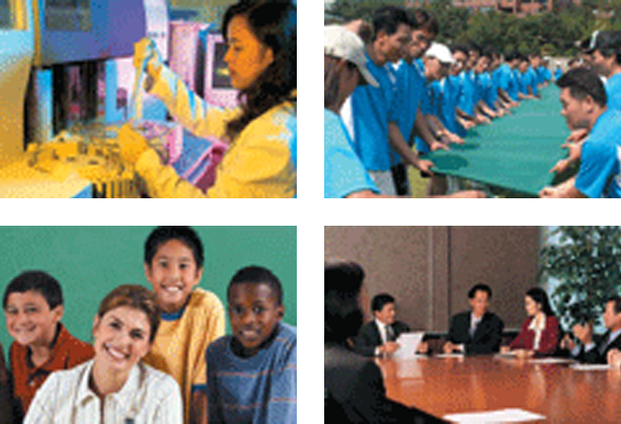
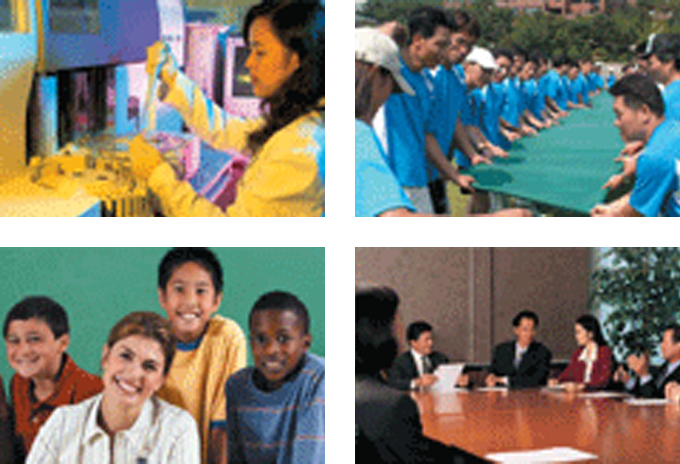

Business-Friendly Environment
- Home
- Why Jeonbuk
- Business-Friendly Environment
Excellent R&D infrastructure and manpower support
North Jeolla Province is furnished with an abundant infrastructure derived from the integration of companies, universities and administrative organizations to nurture talented manpower. It is carrying out its industry-academy-government coupling projects that aim to provide highly skilled workers, together with 300 research institutes and 36 universities and specialized high schools that strive to provide training that will foster a skilled workforce in companies.

- Nurturing skilled/functional manpower in 36 universities and specialized high schools: Universities (23,000), Specialized high schools (2,000)
- Jeonbuk Employment Center: Provides real-time information on job opportunities via smart phones
- Customized manpower training projects including industry-academy-government coupling projects
- Nurtures 1,100 skilled workers annually, 28 courses from 11 universities, approximately 1,100 companies are participating in the project
Stable labor-management culture
- Declared the Industrial Peace for Labor-Management Harmony for the first time in Korea in 2006
- Has the lowest frequency of labor-management disputes in the country
- Applying for labor-management harmony programs and supporting 11 companies
- Selected as the best place for excellent labor and management harmony in 2012
 
